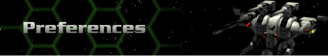

› |
› |
› |
Preferences |

General
Herc Base Ambient Animation – this will either enable or disable the animated menus in the Herc Base. Setting this to “OFF” will speed navigation of the menus.
Digital Sound Effects – three settings allow you to control the level of sound effects in the game. The middle setting turns off non-game-critical sounds but leaves most important sound effects on.
Background Music – three settings allow you to control the nature of your background music. The middle setting turns off the repetitive music, but leaves the longer redbook audio tracks on.
Amount of Voice Playback – the three settings give you control over the amount of digital voice in the game. The middle setting turns off non-game-critical voice but leaves the most important voice effects on.
Volume of voice playback – sets the volume of voice playback. Note that this is only the volume of voice; the overall system volume can be set normally within your system.
Windows
Game always fills entire screen? – if you are using a screen resolution greater than 640x480, you can choose any of several methods for using the extra space around the game screen. The following are the options you have:
Use extra screen real estate for battle terrain? – if selected, this allows you to expand the sim screen to show a larger portion of the map on the main battle display. Note that this will slow down the game and should not be selected on 486 systems.
Hint text on menu bar? – this allows your rollover help text to be displayed on the top menu bar. If you’ve disabled this menu bar below, you must instead select “Hint text below game window?”.
Hint text below game window? – this option displays rollover help text in the extra space below the active game window. Note that in the battle portions of the game, this text may be difficult to read as it will overwrite game screen elements.
Disable custom Windows cursors? – the default for this option is yes, as custom cursors often create flickering and make gameplay difficult.
Game window on top of taskbar? – this option defaults to no, but is necessary if you have your taskbar set to “autopopup” and are playing in 640x480 resolution. Some game buttons and options will be obscured by the taskbar unless this option is selected.
Battle Animation
Battle Ambient Animation – determines the quantity of animations in the battlefield; fewer animations will speed the game.
Firing Detail (Commander and Others) – sets the amount of detail for each weapon being fired from Hercs (Commander) and Cybrids (Others). Again, selecting a low detail will greatly speed gameplay.
Animation Speed (Commander and Others) – sets the movement speed for Hercs and Cybrids. Faster speed settings are less visually pleasing due to faster animations, but greatly speed gameplay.
Show death animations – an option for the animation screen that is displayed if your Bioderms perish. Turning this off will disable the animation entirely, though Bioderms will still perish normally.
Terrain
View follows enemy movement – sets the option to follow enemy movement during their turn. If selected, the main view will center on each enemy as they move.
View centers after each movement – sets the option to have the selected Herc centered in the main window after each move. If selected, the main view will snap to a Herc as it completes an assigned move.
Outline hexes – displays the black outlines around each hex; provides slightly better detail.
Automatic terrain scroll active – operational only in full-screen mode; main battlefield window will scroll when cursor is placed at the edges of the screen.
Terrain scroll speed – sets the rate of scroll, both with the autoscroll and with manual scrolling.
Detail zoomed in – sets the amount of terrain detail while zoomed in.
Detail zoomed out – sets the amount of terrain detail while zoomed out.